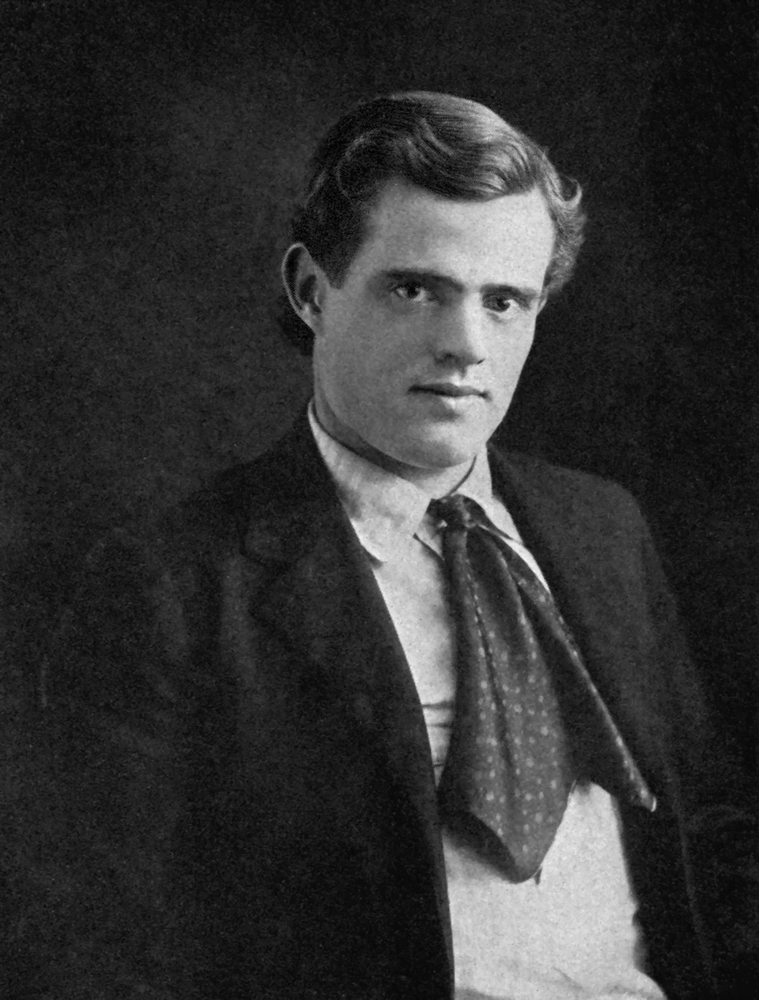

John Griffith Chaney, better known as Jack London, was an American novelist, journalist and activist. A pioneer of commercial fiction and American magazines, he was one of the first American authors to become an international celebrity and earn a large fortune from writing.
